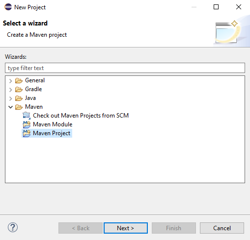
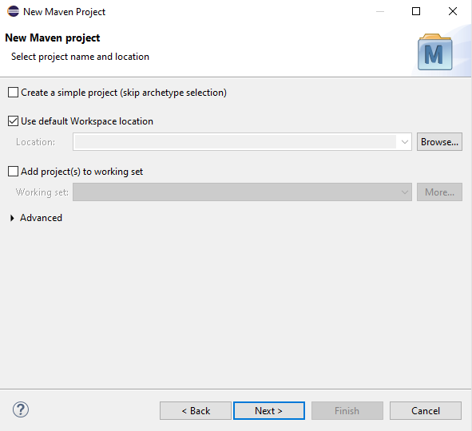
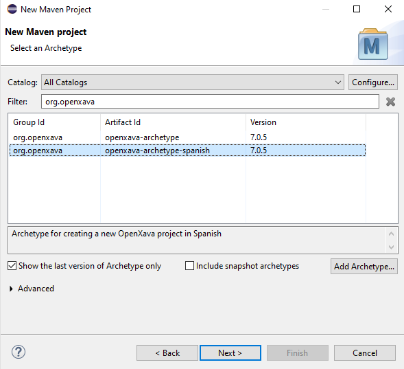
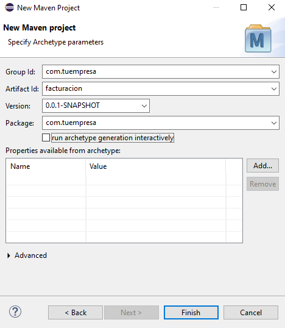
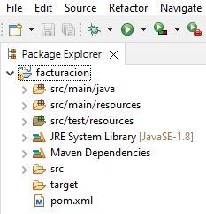
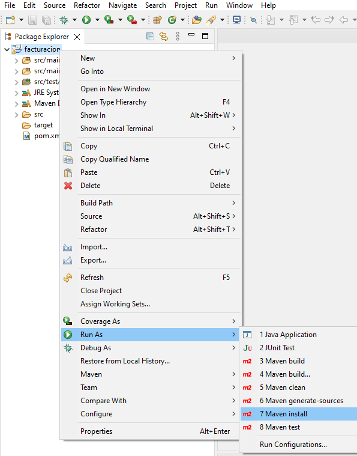
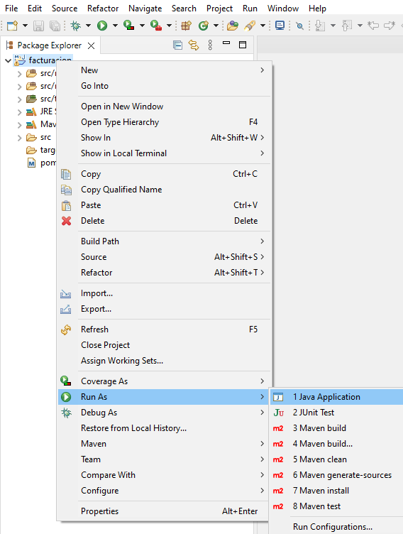

Si estás usando una versión de OpenXava anterior a la 7.0 mira las instrucciones antiguas
OpenXava incluye OpenXava Studio,
por lo que no necesitas un IDE adicional para trabajar con OpenXava.
OpenXava Studio está basado en OpenXava pero es más ligero y bonito.
Además, puedes instalar cualquier plugin de Eclipse que necesites en
OpenXava Studio y cambiar el tema visual, para poner un tema claro, por
ejemplo. De todas formas, si prefieres trabajar con tu propio Eclipse
también es posible. Además, si usas Eclipse IDE for Enterprise Java
Developers, puedes añadir un servidor Tomcat en la pestaña Servers
tab y añadirle tu aplicación OpenXava.
Crear un nuevo proyecto Maven
Hay un arquetipo Maven para crear nuevos proyectos OpenXava, por lo que
puedes crear un nuevo proyecto Maven desde Eclipse de la forma habitual.
Abre el menú en Eclipse File > New > Project… El cual
mostrará el siguiente diálogo, donde has de escoger Maven Project
y pulsar en Next:

En
el siguiente paso simplemente pulsa en Next:

Ahora
es el momento de elegir el arquetipo, escribe org.openxava en el
filtro para mostrar solo los arquetipos de OpenXava, luego elige openxava-archetype-spanish
y haz clic en Next:

Finalmente,
debes introducir el nombre de tu proyecto, ponlo en el campo Artifact
id, en minúsculas. Para los campos Group Id y Package,
introduce el dominio de tu empresa al revés (si trabajas para
Telefónica, sería com.telefonica, por ejemplo). Debes quitar el nombre
de la aplicación de Package, porque Eclipse lo añade
incorrectamente. Además, asegúrate de desmarcar la opción run
archetype generation interactively:

Pulsa
Finish en el diálogo anterior para crear tu proyecto. Después,
deberías tener tu nuevo proyecto OpenXava en tu workspace, así:

Compila tu nuevo proyecto
Una vez creado, debe compilar tu proyecto para que funcione. Para ello,
elige la opción Run As > Maven install en tu proyecto::

Ahora tu proyecto está listo para
ejecutarse.
Ejecuta tu proyecto
Para ejecutar tu proyecto, coloca el ratón sobre la carpeta src/main/java
dentro de tu proyecto, haz clic con el botón derecho del ratón y
selecciona Run As > Java Application:

Tu proyecto se está ejecutando ahora. Ya estás listo para seguir la guía
de primeros pasos: